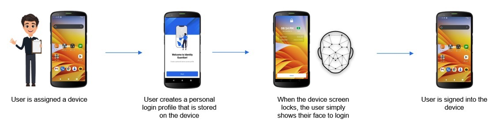
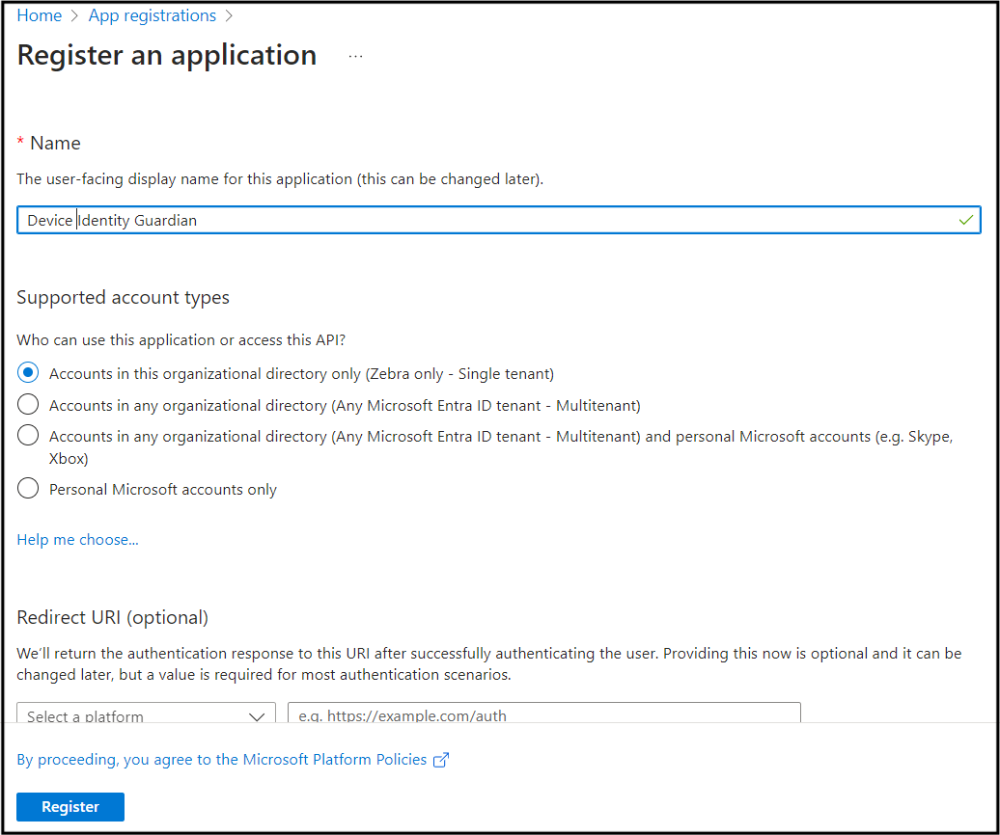
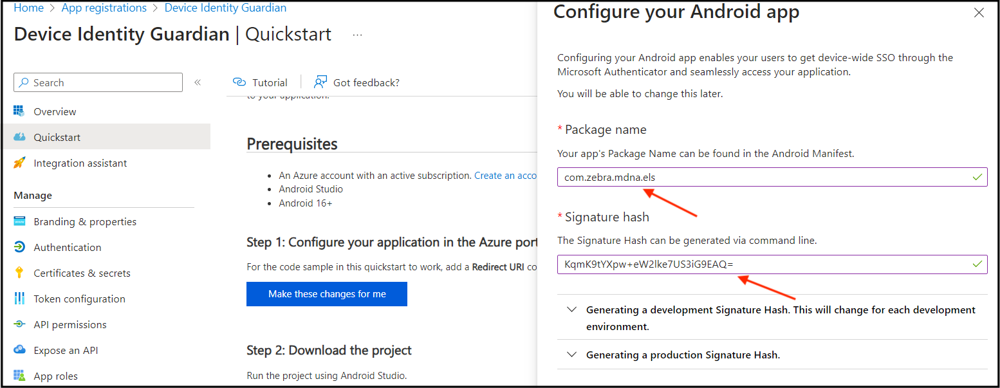
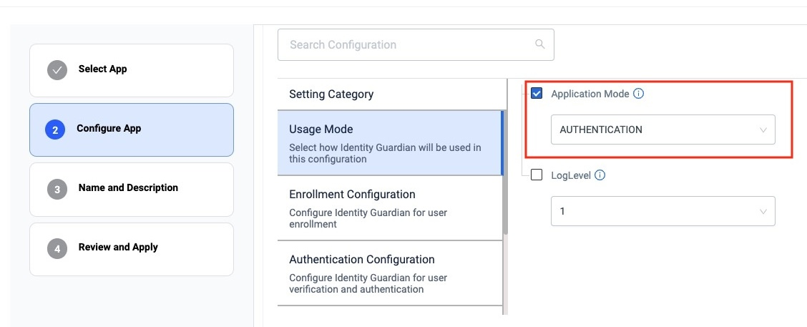
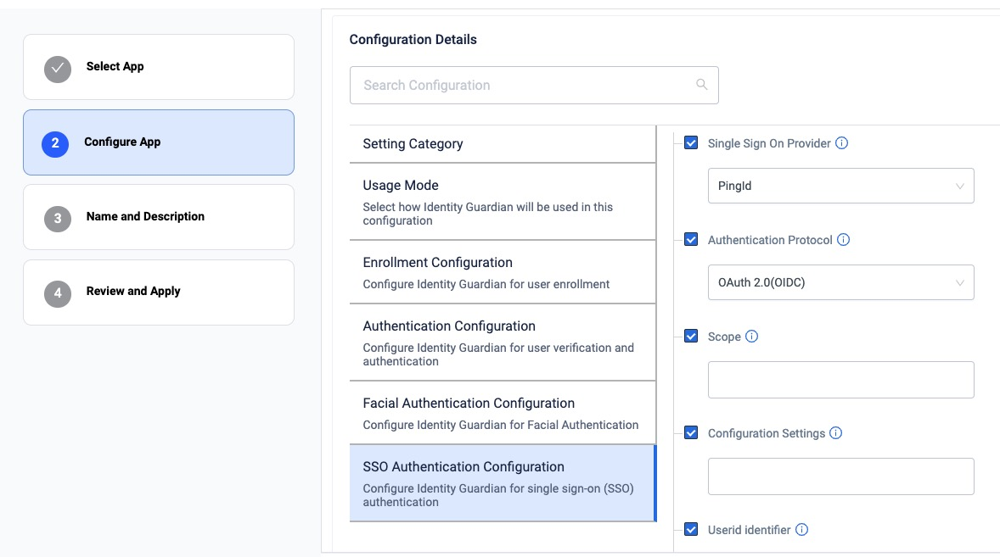
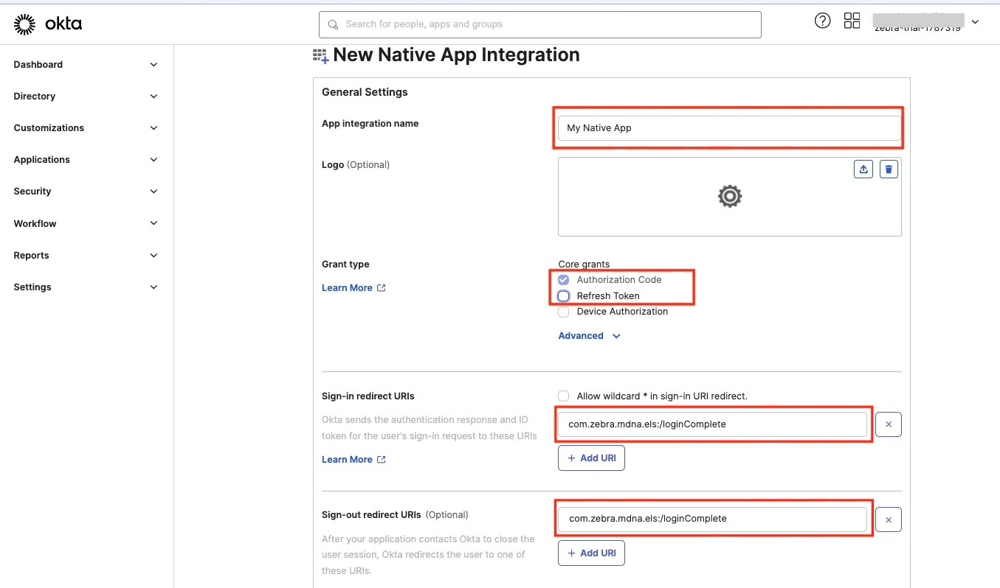
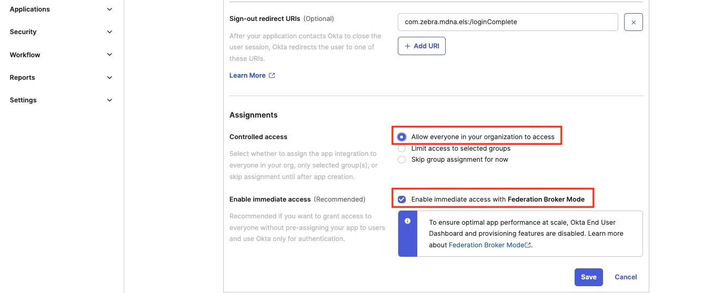
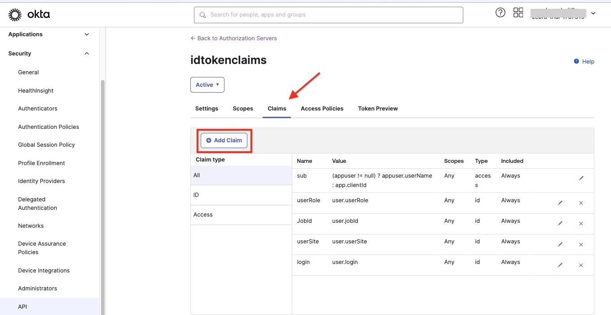
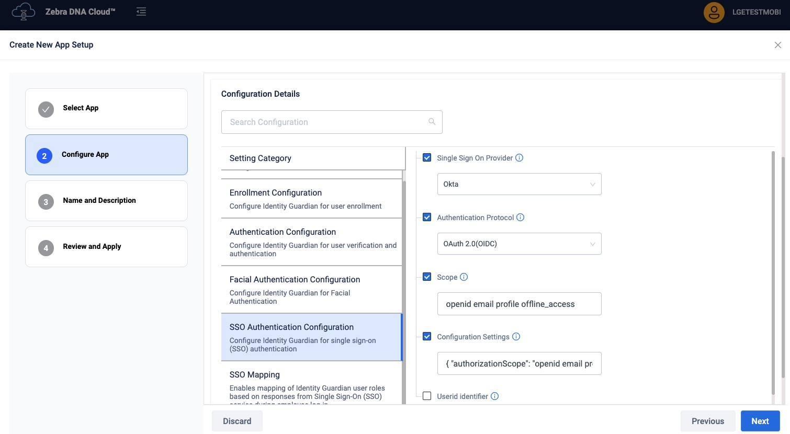

Overview
To install and configure Identity Guardian, use Zebra DNA Cloud (navigate to My Apps > Zebra Collection) or an Enterprise Mobility Management (EMM) system. Administrators establish usage policies and controls for Identity Guardian through Managed Configurations, enabling personalization of device restrictions and access.
There are 2 modes of user device access:
- Shared Device - A device designated for use by multiple individuals. User data is securely encrypted and stored within a personalized barcode, which is generated through facial recognition or a user-defined passcode. This barcode can be easily discarded to erase personal data.
- Personally Assigned Device - A device allocated specifically to an individual for their dedicated use. User data is securely integrated within the Android framework, rendering it inaccessible even to the organization.
Application authentication is simplified through integration with your organization's identity provider (IdP), enabling single sign-on (SSO). Users log in only once, and the system handles subsequent application log-ins, streamlining the process.
Zebra DNA Cloud's dashboard provides administrators with insights into user activities, such as sign-in/sign-out events and usage durations, thereby promoting user accountability.
Notes:
- Identity Guardian must be sideloaded and is non-operational in safe mode. Zebra advises against starting devices in safe mode. To disable safe mode, apply the corresponding XML through your EMM or scan the relevant barcode using the StageNow client on the device. The XML and StageNow barcode are available depending on your Android version:
- When using the 42Gears EMM system, apps installed via Zebra DNA Cloud in app update mode must be set as high priority.
Requirements
Identity Guardian Requirements:
- Zebra devices running Android 11 or higher are supported. See Zebra Support Portal for the supported devices.
- For biometric authentication, a front-facing camera is required on the device.
- Licenses:
- An Identity Guardian license is required for advanced features including facial biometric authentication, Single Sign-On (SSO) support and device API support. See Licensing.
- Zebra Professional-series devices require a Mobility DNA Enterprise license for basic functionality.
- An Enterprise Mobility Management (EMM) system, such as Zebra DNA Cloud or a third party system, that supports Managed Configurations (also known as Managed App Configurations) is required to configure Identity Guardian on the device.
- After installation on the device, Identity Guardian must be launched for the configurations to be applied.
- Single sign-on (SSO) support: Compatibility with Microsoft Entra ID (formerly Azure Active Directory), PingID and OKTA platforms using OAUTH and OAUTH+OIDC authentication protocols.
Download
Download and install Identity Guardian from the following sources:
- Google Play - By default, Google Play apps, including Identity Guardian, are set to update automatically. To manage updates:
- Disable Automatic Updates - Submit the Disable_AutoUpgrade_IG.xml through your EMM platform.
- Enable Automatic Updates - Submit the Enable_AutoUpgrade_IG.xml through your EMM platform.
- Zebra support portal
Device Access Types
There are 2 types of user device access:
- Shared Device
- Personally Assigned Device
Shared Device
In environments where multiple users share a single device, Identity Guardian ensures secure and personalized access. It simplifies the authentication process, allowing users to control their data without storing personal information on the device or in the cloud. This is achieved by providing each user with a unique, encrypted barcode that stores their personal data. For enhanced security, multifactor authentication can be configured, including options such as a passcode, facial biometrics, and/or single sign-on (SSO). Alternatively, SSO can be established as the primary authentication instead of issuing individual barcodes.
Shared devices can recognize an unlimited number of registered users. Personalized experiences can be tailered based on each user's predefined organizational role. User data is encrypted and stored within a unique barcode, located in the /enterprise/usr/Profiles folder, which the user can control. Users can simply discard the barcode to remove their personal data. Optionally, facial biometrics can be used to generate this barcode. For temporary user profiles, barcodes can be set to automatically expire at a specified date and time.
Note: If a user loses their barcode, it can only be retrieved from the device, specifically from the folder: /enterprise/usr/Profiles

Personally Assigned Device
In environments where devices are assigned to specific users, these individuals retain control over their encrypted personal data aand can delete it as needed. User data is safeguarded within the Android framework, stored in Identity Guardian's isolated storage, which is part of Android's access-controlled application platform. This ensures that even the organization itself cannot access the data.
Identity Guardian integrates with identity providers (IdPs) to streamline the authentication process. It uses a single sign-on (SSO) system, requiring users to authenticate only once. This system manages security and simplifies access, allowing users to log into multiple applications in a single session. For enhanced security, administrators can customize multifactor authentication settings, including a passcodes, facial biometrics, and/or SSO. Unlike shared devices, personally assigned devices do not utilize barcodes.

EMM
Deploy and configure Identity Guardian on devices using an Enterprise Mobility Management (EMM) system, such as Zebra DNA Cloud or a third party system, which supports Managed Configurations.
After installation, Identity Guardian must be launched for the configurations to take effect.
The EMM system may offer the option to auto-launch the app. If this option is not available, the following commands may be used to launch Identity Guardian:
For Android, such as from another app, use this command:
adb shell am start -n com.zebra.mdna.els/com.zebra.mdna.els.userEnrollment.activity.EnrollmentActivityFor an EMM, such as VMware Workspace ONE UEM (AirWatch), use this command to launch via intent:
mode=explicit,broadcast=false,action=android.intent.action.MAIN,package=com.zebra.mdna.els,class=com.zebra.mdna.els.userEnrollment.activity.EnrollmentActivity
Generic procedure to setup Identity Guardian using an EMM:
- Enroll the devices to the EMM.
- Upload the Identity Guardian APK to the EMM, for example via Android Enterprise or the EMM's App Store. Make sure to auto-launch the app after installation.
- Create a new application policy using Managed Configurations to configure the appropriate Identity Guardian settings. Consider the following:
- For shared devices, create two distinct profiles:
- Enrollment - This generates unique user barcodes for authentication and is required when implementing facial biometrics. To configure this, navigate to Usage Mode > Application Mode and select Enrollment.
- Authentication - This configures the authentication methods for users to sign into the device. To configure this, navigate to Usage Mode > Application Mode and select Authentication.
- For personally assigned devices, a single profile encompasses both enrollment and authentication configurations. To configure this, go to Usage Mode > Application Mode and select Personally Assigned.
- For shared devices, create two distinct profiles:
- Assign and apply the application policy to the devices. For shared devices, apply the Enrollment profile first.
- For enrollment, follow the steps on the device to proceed through user enrollment. These steps are based on the Enrollment Configuration settings from step 3.
- For shared devices, refer to shared device user enrollment.
- For personally assigned devices, refer to personl device user enrollment.
- For shared devices, create the Authentication policy and apply this policy to the devices. For personally assigned devices, skip to step 7.
- After device enrollment, the Identity Guardian authentication screen is displayed. The user is now ready to sign into the device based on Authentication Configuration settings from step 3. Refer to Device Sign In.
The following subsections provide video demonstrations tailored for specific EMMs. Within the videos, profiles are created based on user access:
- Shared devices - Create two separate profiles based on the Application Mode selected under the Usage Mode section:
- Enrollment - This creates unique user barcodes for authentication and is required when implementing facial biometrics.
- Authentication - This configures the authentication methods employed for users to sign into the device.
- Personally assigned devices - Create a profile by selecting Personally Assigned from Application Mode under the Usage Mode section. This creates a profile encompaassing both enrollment and authentication configurations for personally assigned devices.
Zebra DNA Cloud
This section provides video demonstrations to guide through the process of setting up Identity Guardian using the Zebra DNA Console.
Create and Deploy Enrollment Profile
This first video guides through the process of creating and deploying an enrollment profile, specifically for a shared device. Learn how to define configurations for a user's first-time enrollment, including registering facial features, obtaining user role data, setting up a pin code, and more.
Note: For personally assigned devices, select Personally Assigned from Application Mode under the Usage Mode section. This creates a profile encompaassing both enrollment and authentication configurations.
Create and Deploy Authentication Profile
This second video walks through the process of creating and deploying an authentication profile, specifically for a shared device. It guides through the process of establishing configurations for user authentication each time a user signs into the device. These configurations include scanning a barcode, setting up SSO, defining the passcode, among others. The enrollment profile, created from the previous video, can be used as a template to modify and create this authentication profile.
User Authentication
This video demonstrates various scenarios of user device authentication. In this example, one group of authentication settings is applied to a shared device with the following configurations:
- Comparison source: Barcode
- Primary authentication: SSO
- Secondary authentication: Passcode
- Fallback authentication: Admin bypass passcode
SOTI MobiControl
This video provides step-by-step instructions for setting up Identity Guardian on shared devices using SOTI MobiControl. It covers:
- Deploying the Identity Guardian APK file
- Automatically launching the app
- Creating and applying an enrollment profile
- Creating and applying an authentication profile
Note: For personally assigned devices, select Personally Assigned from Application Mode under the Usage Mode section. This creates a profile that includes both enrollment and authentication configurations.
VMware Workspace ONE UEM
This video provides step-by-step instructions for setting up Identity Guardian on shared devices using VMware Workspace One UEM. This guide covers the following:
- Deploying the Identity Guardian APK file
- Creating and applying an enrollment profile
- Automatically launching Identity Guardian
After applying an enrollment profile, this next video continues with:
- Creating and applying an authentication profile
- Automatically launching Identity Guardian to implement the changes
Note: For personally assigned devices, select Personally Assigned from Application Mode under the Usage Mode section. This creates a profile that includes both enrollment and authentication configurations.
Microsoft Intune
This video provides step-by-step instructions for installing and setting up Identity Guardian with Microsoft Intune, demonstrating the following:
- Deploying the Identity Guardian APK file
- Creating and applying an enrollment profile
- Launching Identity Guardian - Copy the XML content for launching Identity Guardian via OEMConfig
Although this applies to shared devices, similar instructions can be followed personally assigned devices by setting Personally Assigned for Application Mode under the Usage Mode section. This creates a profile that includes both enrollment and authentication configurations.
Add youtube link to video
After applying an enrollment profile, this next video continues with:
- Creating and applying an authentication profile for shared devices
- Launching Identity Guardian to implement the changes - Copy the XML content for launching Identity Guardian via OEMConfig
Add youtube link to video
42Gears SureMDM
This videos walks through the process of setting up Identity Guardian using SureMDM by 42Gears, specifically for personally assigned devices. It covers:
- Deploying the Identity Guardian APK file
- Automatically launching the app
- Creating a policy to configure the desired settings for enrollment and authentication
Note: For shared devices, create two separate configuration profiles according to the selected Application Mode under the Usage Mode section:
- Enrollment - Creates unique user barcodes for authentication and is required when implementing facial biometrics.
- Authentication - This configures the authentication methods employed for users to sign into the device.
SSO
Identity Guardian integrates with identity providers (IdPs) simplifying authentication by only requiring users to log in once, and then leveraging single sign-on (SSO) to streamline the process. This single login grants users to gain access to multiple applications, eliminating the need to keep track of multiple logins for each app.
Supported identity providers:
For authenticating users with SSO, the Microsoft Authenticator and Custom Chrome Tabs are supported to communicate with SSO as the broker.
See SSO Requirements.
Microsoft Entra ID
This section provides guidance to integrate Identity Guardian with Microsoft Entra ID (formerly Azure Active Directory):
I. Register Zebra Identity Guardian
II. Configure SSO for Shared Devices
III. Configure Microsoft Authenticator App
IV. Configure Zebra Identity Guardian App
I. Register Zebra Identity Guardian
To establish a trust relationship between Identity Guardian and the Microsoft identity platform, register Zebra Identity Guardian as an Android application in Microsoft Entra ID (IdP). Consult Microsoft's documentation for guidance on registering an application with the Microsoft identity platform.
Please ensure to enter or select the following when registering Identity Guardian:
- For the supported account type, select "Single tenant." 
- When configuring the Android app, enter the following:
- Package name: com.zebra.mdna.els
- Signature hash: KqmK9tYXpw+eW2lke7US3iG9EAQ= 
- Download the code sample and save the file as
auth_config_single_account.json. This will be used in a subsequent step to configure the app settings on the device.
II. Configure SSO for Shared Devices
If Microsoft Authenticator is used for single sign-on (SSO) on shared devices, it is possible to integrate a third-party device compliance partner solution with Microsoft Intune. This allows for the collection of device compliance data in conjunction with Intune's own compliance results. The combined data can be used to formulate access policies, providing enhanced protection for your organization and its data. Examples of third-party device compliance partners include solutions such as SOTI MobiControl, VMware Workspace ONE UEM (formerly AirWatch), and others. Consult your EMM or Microsoft's documentation for guidance on adding a third-party device compliance partner in Intune.
III. Configure Microsoft Authenticator App
For optimal use of shared device mode with SSO through Microsoft Authenticator, ensure the Microsoft Authenticator app is installed on the devices. This facilitates automatic SSO single sign-in and single sign-out across apps on the device.
To install and configure Microsoft Authenticator app:
Download and install the Microsoft Authenticator app from Google Play via an EMM, such as SOTI MobiControl or VMware Workspace ONE UEM.
In the EMM, enable Shared Device Mode and enter the Shared Device Mode Tenant Identifier (obtained from the Microsoft Entra ID).

SOTI MobiControl Managed App Config
IV. Configure Zebra Identity Guardian App
To enable user access to the device through SSO, install and set up Identity Guardian on the devices:
- Deploy and install Zebra Identity Guardian app on the devices.
- Launch the app using an EMM. This step must be performed at least once.
- Enter the Managed Configuration settings for the app via your EMM:
- Select the application mode:
- Application Mode: Authentication  zDNA Cloud Managed Config
- Configure the Verification Setup to validate the user access:
- Primary Authentication Factor: SSO
- Secondary Authentication Factor: [Select FACE, PASSCODE, SSO or NONE]
- Fallback Authentication Factor: [Select FACE, PASSCODE, NONE, SSO or ADMIN BYPASS PASSCODE]
- Primary Authentication Timeout: [Enter value in ms, e.g. "300000"]
- Fallback Authentication Timeout: [Enter value in ms, e.g. "300000"]
 zDNA Cloud Managed Config
zDNA Cloud Managed Config
- Configure the Lock-screen Event options:
- On Unlock:
- Verification Setup: [Enter the desired authentication scheme, e.g. "Verification Setup1"]
- On Reboot:
- Verification Setup: [Enter the desired authentication scheme, e.g. "Verification Setup1"]
- On AC power connected:
- Verification Setup: [Enter the desired authentication scheme, e.g. "Verification Setup1"]
- On AC power disconnected:
- Verification Setup: [Enter the desired authentication scheme, e.g. "Verification Setup1"]
- On device manual check in:
- Verification Setup: [Enter the desired authentication scheme, e.g. "Verification Setup1"]
- On user change:
- Verification Setup: [Enter the desired authentication scheme, e.g. "Verification Setup1"]
 zDNA Cloud Managed Config
zDNA Cloud Managed Config
- Verification Setup: [Enter the desired authentication scheme, e.g. "Verification Setup1"]
- On Unlock:
- Configure the SSO Authentication Configuration for the app to communicate with Microsoft SSO to authenticate the user:
- Single Sign On Provider: Microsoft
- Authentication Protocol: OAuth 2.0 (OIDC)
- Scope: [Enter the string based on the SSO server settings]
- Configuration Settings: [Enter the following string, but replace "client_id" and "authority_url" with your values from
auth_config_single_account.jsonfile downloaded from step I.]{ "client_id" : "[ENTER YOUR CLIENT ID]", "authorization_user_agent" : "DEFAULT", "redirect_uri" : "msauth://com.zebra.mdna.els/KqmK9tYXpw%2BeW2lke7US3iG9EAQ%3D", "account_mode" : "SINGLE", "broker_redirect_uri_registered": true, "shared_device_mode_supported": true, "authorities" : [ { "type": "AAD", "authority_url": "[ENTER YOUR AUTHORITY URL]" } ] } zDNA Cloud Managed Config
zDNA Cloud Managed Config
- Select the application mode:
- If mapping the SSO response to application-specific roles, enter the following (see Managed Configurations for more information):
- Configuration Role Identification - Enables the recognition and mapping of the Single Sign-On (SSO) response to application-specific roles. Click Add Role Identifier as needed.
- Role Identifier - Establishes links between roles in SSO responses and their corresponding roles within the Identity Guardian app.
- Identity Guardian Role Name - Enter the Identity Guardian user role to be assigned based on SSO response during user sign-in
- Key-value Pair for Role Assignment - Add one or more SSO key-value pairs to identify and map users to a predefined Identity Guardian user role. Click Add SSO Key-Value Pair as needed.
- SSO Key-Value Pair - Choose whether the SSO response, which contains the user key and values, should be mapped to a corresponding user role in Identity Guardian
- SSO Key - Enter the SSO key to map it to an Identity Guardian role.
- SSO Value - Enter the SSO value(s) to map to the Identity Guardian role. Use commas to separate multiple entries.
 zDNA Cloud Managed Config
zDNA Cloud Managed Config
- Configuration Role Identification - Enables the recognition and mapping of the Single Sign-On (SSO) response to application-specific roles. Click Add Role Identifier as needed.
- See Managed Configurations to configure any other non-SSO settings.
- Deploy the Managed Configurations to the devices through your EMM.
When a device gets updated with the new configurations, Zebra Identity Guardian activates the lock screen. The user is then required to authenticate themselves using Single Sign-On (SSO) to gain access to the device. See User Guide for more information.
PingID
This section provides guidance to integrate Identity Guardian with PingID.
To enable user access to the device through SSO, install and set up Identity Guardian on the devices:
- Deploy and install Zebra Identity Guardian app on the devices.
- Launch the app using an EMM. This step must be performed at least once.
- Enter the Managed Configuration settings for the app via your EMM:
- Select the application mode:
- Application Mode: Authentication zDNA Cloud Managed App Config
- Configure the Verification Setup to validate the user access:
- Primary Authentication Factor: SSO
- Secondary Authentication Factor: [Select FACE, PASSCODE, or NO_COMPARISON]
- Fallback Authentication Factor: [Select FACE, PASSCODE, NONE, SSO or ADMIN BYPASS PASSCODE]
- Primary Authentication Timeout: [Enter value in ms, e.g. "300000"]
- Fallback Authentication Timeout: [Enter value in ms, e.g. "300000"]
zDNA Cloud Managed Config
- Configure the Lock-screen Event options:
- On Unlock:
- Verification Setup: [Enter the desired authentication scheme, e.g. "Verification Setup1"]
- On Reboot:
- Verification Setup: [Enter the desired authentication scheme, e.g. "Verification Setup1"]
- On AC power connected:
- Verification Setup: [Enter the desired authentication scheme, e.g. "Verification Setup1"]
- On AC power disconnected:
- Verification Setup: [Enter the desired authentication scheme, e.g. "Verification Setup1"]
- On device manual check in:
- Verification Setup: [Enter the desired authentication scheme, e.g. "Verification Setup1"]
- On user change:
- Verification Setup: [Enter the desired authentication scheme, e.g. "Verification Setup1"]
zDNA Cloud Managed Config
- Verification Setup: [Enter the desired authentication scheme, e.g. "Verification Setup1"]
- On Unlock:
- Configure the SSO Authentication Configuration:
- Single Sign On Provider: PingId
- Authentication Protocol: OAuth 2.0 (OIDC)
- Scope: openid email profile
- Userid Identifier: [Specify the user key for identifying the signed-in user]
- Configuration Settings: [Enter the specified string, but replace the following values with those from your own SSO response: logoutURL, revokeURL, tokenURL, authorizationURL, clientId, userInfoUrl]
 zDNA Cloud Managed App Config{ "redirectURI" : "com.zebra.mdna.els:/loginComplete", "logoutURL" : "[enter your logout URL]", "revokeURL" : "[enter your revoke URL]", "tokenURL" : "[enter your token URL]", "authorizationURL" : "[enter your authorization URL]", "clientAuthType" : 0, "clientId" : "[enter your clientID]", "certificatePhrase" : "", "userInfoUrl" : "[enter your userInfo URL]", "certificate" : "" }
- Select the application mode:
- If mapping the SSO response to application-specific roles, enter the following (see Managed Configurations for more information):
- Configuration Role Identification - Enables the recognition and mapping of the Single Sign-On (SSO) response to application-specific roles. Click Add Role Identifier as needed.
- Role Identifier - Establishes links between roles in SSO responses and their corresponding roles within the Identity Guardian app.
- Identity Guardian Role Name - Enter the Identity Guardian user role to be assigned based on SSO response during user sign-in
- Key-value Pair for Role Assignment - Add one or more SSO key-value pairs to identify and map users to a predefined Identity Guardian user role. Click Add SSO Key-Value Pair as needed.
- SSO Key-Value Pair - Choose whether the SSO response, which contains the user key and values, should be mapped to a corresponding user role in Identity Guardian
- SSO Key - Enter the SSO key to map it to an Identity Guardian role.
- SSO Value - Enter the SSO value(s) to map to the Identity Guardian role. Use commas to separate multiple entries.
zDNA Cloud Managed Config
- Configuration Role Identification - Enables the recognition and mapping of the Single Sign-On (SSO) response to application-specific roles. Click Add Role Identifier as needed.
- See Managed Configurations to configure any other non-SSO settings.
- Deploy the Managed Configurations to the devices through your EMM.
When a device gets updated with the new configurations, Zebra Identity Guardian activates the lock screen. The user is then required to authenticate themselves using Single Sign-On (SSO) to gain access to the device. See User Guide for more information.
Okta
This section provides guidance to integrate Identity Guardian with Okta.
I. Register Zebra Identity Guardian
II. Configure Zebra Identity Guardian App
I. Register Zebra Identity Guardian
- In the Okta web portal, create a new application. From the left menu, select Applications > Applications. Click on Create App Integration.

- Select OIDC, then select Native Application. Click Next.

- Perform the following:
- Enter the App integration name.
- Select Authorization Code as the Grant type.
- If needed, select Refresh Token. This option renews the access token every hour. Without it, the access token expires after an hour, resulting in a forced logout.
- For Sign-in redirect URIs and Sign-out redirect URIs, enter the following:
com.zebra.mdna.els:/loginComplete
- Perform the following:
- For Controlled access, select Allow everyone in your organization to access. Then select Enable immediate access with Federation Broker Mode.
- Click Save. 
- If needed, add an authorization server from Security > API.

- If needed, add scopes in the authorization server.

- Add claims to the authorization server. 
- In the Settings tab of the authorization server, click to open the Metadata URI.

- Metadata is displayed, similar to the following:

- Record the following values needed in the next section:
- authorizationScope
- end_session_endpoint (logoutURL)
- token_endpoint (tokenURL)
- authorization_endpoint (authorizationURL)
- userInfoUrl
- revokeURL (revocation_endpoint)
II. Configure Zebra Identity Guardian App
To enable user access to the device through SSO, install and set up Identity Guardian on the devices:
- Deploy and install Zebra Identity Guardian app on the devices.
- Launch the app using an EMM. This step must be performed at least once.
- Enter the Managed Configuration settings for the app via your EMM:
- Select the application mode:
- Application Mode: Authentication zDNA Cloud Managed Config
- Configure the Verification Setup to validate the user access:
- Primary Authentication Factor: SSO
- Secondary Authentication Factor: [Select FACE, PASSCODE, SSO or NONE]
- Fallback Authentication Factor: [Select FACE, PASSCODE, NONE, SSO or ADMIN BYPASS PASSCODE]
- Primary Authentication Timeout: [Enter value in ms, e.g. "300000"]
- Fallback Authentication Timeout: [Enter value in ms, e.g. "300000"]
zDNA Cloud Managed Config
- Configure the Lock-screen Event options:
- On Unlock:
- Verification Setup: [Enter the desired authentication scheme, e.g. "Verification Setup1"]
- On Reboot:
- Verification Setup: [Enter the desired authentication scheme, e.g. "Verification Setup1"]
- On AC power connected:
- Verification Setup: [Enter the desired authentication scheme, e.g. "Verification Setup1"]
- On AC power disconnected:
- Verification Setup: [Enter the desired authentication scheme, e.g. "Verification Setup1"]
- On device manual check in:
- Verification Setup: [Enter the desired authentication scheme, e.g. "Verification Setup1"]
- On user change: - Verification Setup: [Enter the desired authentication scheme, e.g. "Verification Setup1"]
zDNA Cloud Managed Config
- On Unlock:
- Configure the SSO Authentication Configuration for the app to communicate with Microsoft SSO to authenticate the user:
- Single Sign On Provider: Okta
- Authentication Protocol: OAuth 2.0 (OIDC)
- Scope: [Enter the string based on the SSO server settings, e.g. "openid email profile offline_access"]
- Configuration Settings: [Enter the following string, but replace "authorizationScope", "logoutURL", "tokenURL", "client_id", "authorizationURL", "userInfoUrl", and "revokeURL" with your values seen from Metadata URI from step I.]
 zDNA Cloud Managed Config{ "authorizationScope": "[enter the string based on the SSO server settings, e.g. "openid email profile offline_access"]", "redirectURI" : "com.zebra.mdna.els:/loginComplete", "logoutURL" : "[enter your logout URL]", "tokenURL" : "[enter your token URL]", "authorizationURL" : "[enter your authorization URL]", "clientAuthType" : 0, "clientId" : "[enter your client ID]", "certificatePhrase" : "", "userInfoUrl" : "[enter your userInfo URL]", "revokeURL" : "[enter your revoke URL]", "certificate" : "", "clientSecret":"", "enablePKCE": true }
- Select the application mode:
- If mapping the SSO response to application-specific roles, enter the following (see Managed Configurations for more information):
- Configuration Role Identification - Enables the recognition and mapping of the Single Sign-On (SSO) response to application-specific roles. Click Add Role Identifier as needed.
- Role Identifier - Establishes links between roles in SSO responses and their corresponding roles within the Identity Guardian app.
- Identity Guardian Role Name - Enter the Identity Guardian user role to be assigned based on SSO response during user sign-in
- Key-value Pair for Role Assignment - Add one or more SSO key-value pairs to identify and map users to a predefined Identity Guardian user role. Click Add SSO Key-Value Pair as needed.
- SSO Key-Value Pair - Choose whether the SSO response, which contains the user key and values, should be mapped to a corresponding user role in Identity Guardian
- SSO Key - Enter the SSO key to map it to an Identity Guardian role.
- SSO Value - Enter the SSO value(s) to map to the Identity Guardian role. Use commas to separate multiple entries.
zDNA Cloud Managed Config
- Configuration Role Identification - Enables the recognition and mapping of the Single Sign-On (SSO) response to application-specific roles. Click Add Role Identifier as needed.
- See Managed Configurations to configure any other non-SSO settings.
- Deploy the Managed Configurations to the devices through your EMM.
When a device gets updated with the new configurations, Zebra Identity Guardian activates the lock screen. The user is then required to authenticate themselves using Single Sign-On (SSO) to gain access to the device. See User Guide for more information.
Secure Setup for Faster Logins
Identity Guardian can simplify Single Sign-On (SSO) logins by prompting users for SSO authentication only once, post device enrollment. For frequent situations like device lock, it offers efficient options like biometric or pin-based access, eliminating the need for repeated SSO logins. It maintains the original SSO session's integrity, ensuring exclusive user access and simultaneous logout from all apps, creating a secure and streamlined login process.
To implement this authentication strategy, follow the procedure below based on whether the device model is shared or personally assigned.
Shared Devices
Administrator setup - refer to Managed Configurations:
- Set SSO authentication in the following managed configurations:
- Usage Mode
- Application Mode: Authentication
- Authentication Configuration
- User Verification Methods
- Verification Setup1: [Select or enter all desired options and include SSO as one of the authentication factors.]
- Lock-screen Event Options
- On user change: [Select the verification that includes SSO authentication, e.g. Verification Setup1]
- Usage Mode
- For the rest of the following Lock-screen Event Options, select the verification that does not include SSO authentication, e.g. Verification Setup2 (includes face or passcode):
- On Unlock
- On Reboot
- On AC Power Connected
- On AC Power Disconnection
- In Authentication Configuration, set the following to false under Force Logout Options:
- On Lock
- On Reboot
- On AC Power Connected
- On AC Power Disconnected
End user authentication:
- Enroll the user. Make sure to enter the SSO user ID in the Employee ID field.
- Once the enrollment process is complete, the user is required to authenticate themselves on the device by scanning their user barcode once.
- If the scanned barcode matches with the enrolled user, the SSO session remains active. For subsequent logins, the user is prompted to authenticate via facial biometrics or user passcode, depending on the setup by the administrator.
- If the scanned barcode does not match with the enrolled user, it prompts for SSO credentials since an On user change event occurred. These SSO credentials remain active on the device.
- After the user authenticates, the user is no longer required to re-enter their SSO credentials unless one of the following occurs:
- The user logs out manually from the device
- The user is automatically logged out of the device if any of the Force Logout Options are met from Authentication Configuration in the managed configurations.
- The SSO session times out.
Personally Assigned Devices
Administrator setup - refer to Managed Configurations:
- Set SSO authentication in the following managed configurations:
- Usage Mode
- Application Mode: Personally Assigned
- Authentication Configuration
- User Verification Methods
- Verification Setup1: [Select or enter all desired options and include SSO as one of the authentication factors.]
- Lock-screen Event Options
- On user change: [Select the verification that includes SSO authentication, e.g. Verification Setup1]
- Usage Mode
- For the rest of the following Lock-screen Event Options, select the verification that does not include SSO authentication, e.g. Verification Setup2 (includes face or passcode):
- On Unlock
- On Reboot
- On AC Power Connected
- On AC Power Disconnection
- In Authentication Configuration, set the following to false under Force Logout Options:
- On Lock
- On Reboot
- On AC Power Connected
- On AC Power Disconnected
End user authentication:
- Enroll the user. Make sure to enter the SSO user ID in the Employee ID field.
- Once the enrollment process is complete, the user is required to authenticate themselves on the device by facial biometrics or passcode entry once. If successful, the SSO session remains active.
- After the user authenticates, the user is no longer required to re-enter their SSO credentials unless one of the following occurs:
- The user logs out manually from the device
- The user is automatically logged out of the device if any of the Force Logout Options are met from Authentication Configuration in the managed configurations.
- The SSO session times out.